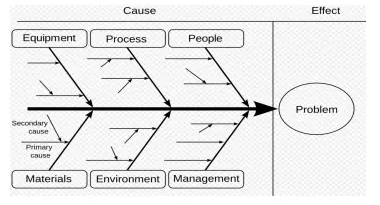
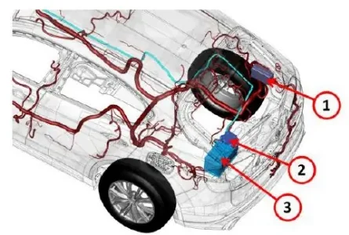

Troubleshooting Principles¶
Everything you have done so far in the bootcamp — reading CAN traces, flashing and diagnosing ECUs, running HIL test cases — eventually feeds into one practical activity: a vehicle or a rig misbehaves, and someone has to figure out why. That activity is troubleshooting, and it is a discipline of its own, with a method you can learn rather than a talent you are born with.
This article covers the general troubleshooting method taught in the academy, then walks through two real case studies from the course (a parasitic battery drain and a torque-security DTC on a P1P4 hybrid prototype) and finishes with the two warm-up exercises from the lesson.
What troubleshooting is (and is not)¶
Troubleshooting is a form of problem solving, usually applied to something that has suddenly stopped working. Three properties define it:
- It is a logical, systematic search for the root cause — not a search for a plausible-sounding fix.
- Finding the most likely cause is a process of elimination: you remove candidate causes one by one with tests, rather than arguing for your favorite.
- It is not finished until you have confirmed that the solution actually restores the product or process to its working state.
Think first, act later
The lesson opens with Einstein's remark: given one hour to solve a problem, spend 55 minutes thinking about the problem and 5 minutes thinking about solutions. An incorrect assessment of what the problem is will poison every activity that follows.
The mindset: critical thinking, not magical thinking¶
The first instinct when a system fails is to blame whatever changed most recently. That instinct is useful as a starting point, but correlation does not imply causality: two events that happen together, or that resemble each other, are not necessarily linked by cause and effect. Attributing causality to coincidence or similarity is what anthropologists call magical thinking — and it is the single most common failure mode of inexperienced troubleshooters.
Critical thinking is the opposite: the analysis of facts to form a judgement. Concretely it means:
- base your theory of the cause on facts as much as possible;
- a theory is good if you can test it — even if it turns out to be wrong, a falsifiable theory moves the investigation forward;
- don't be afraid of being wrong. Being wrong is a normal step of the process: discard the theory and build the next one.
Occam's razor¶
Start from the simplest and most probable explanations first. The principle attributed to William of Ockham — "entities should not be multiplied without necessity" — translates into workshop language as: the simplest solution is most likely the right one. Before suspecting a rare software race condition, check the fuse, the connector, the power supply and the ground.
Descartes' method, applied to a defect¶
The deck frames problem definition with Descartes' four rules, which map remarkably well onto engineering work:
| Rule | What it means at the bench |
|---|---|
| Doubt | Never accept anything as true without specific evidence. Don't jump to conclusions "on the spot", no matter how tempting. |
| Simplification | Divide the problem into easy-to-solve sub-problems, so you can narrow down each difficulty separately. |
| Focus | Solve the simpler parts first, then move to the complex ones. |
| Completeness | Do not omit anything: critically examine all aspects and all related sub-problems. |
The six-step troubleshooting loop¶
The standard procedure is a loop, not a line:
flowchart TD
A["1. Identify the problem"] --> B["2. Establish a theory of probable cause"]
B --> C["3. Test the theory"]
C --> D{"Theory confirmed?"}
D -- "No: discard it" --> B
D -- Yes --> E["4. Establish a plan of action and implement the solution"]
E --> F["5. Verify full system functionality"]
F --> G["6. If applicable, implement preventive measures"]Two points deserve emphasis:
- Step 1 is where most investigations go wrong. A wrong problem statement ("the battery is dead" instead of "the battery is being drained overnight by an unknown consumer") sends every later step in the wrong direction.
- Step 6 is what separates repair from engineering. Fixing the instance in front of you is necessary; adding a preventive measure (a design change, a new test case, a diagnostic check) is what stops the issue from coming back.
Working rules that save time¶
Beyond the formal method, the lesson collects practical advice:
- Share your ideas with everyone involved in the issue. If you cannot get to the solution yourself, help someone else get it — what matters is the solution in a reasonable time, not who finds it.
- If someone else found the solution, make sure you fully understand how it works. Ask questions; there are no silly questions.
- Carefully examine the data you already have. Don't wait for "perfect" data — the answer is often already in the first log you received; it is a matter of being able to read it.
- When an issue requires testing at HIL or on the vehicle, be present during the test whenever possible, to be sure it is executed correctly. You need to trust your data.
- Know the system architecture. If you don't know how it works, it is unlikely you will know how to fix it.
Structuring the cause hunt
When a problem has many possible causes, an Ishikawa (fishbone) diagram helps you enumerate them systematically instead of fixating on the first one: the effect sits at the head, and the bones group candidate causes by family — equipment, process, people, materials, environment, management — split further into primary and secondary causes.

As Sherlock Holmes put it (A. C. Doyle): "When you have eliminated the impossible, whatever remains, however improbable, must be the truth."
Case study 1 — a repeatedly discharged battery¶
A battery that goes flat once is an inconvenience; a battery that keeps going flat is a symptom. The major candidate causes are:
- battery wear (the battery itself no longer holds charge);
- a mismatch of the charge/discharge ratio when charging from the alternator;
- alternator failure;
- starter malfunction or poor operation;
- external leakage currents — something on the vehicle draws current while it is parked.
The vehicle's power distribution hardware you will be probing looks like this:

- Front PDC (Power Distribution Center)
- Battery fuse box
- Battery
Measuring the leakage (parasitic) current¶
Preparation first:
- Open the hood and switch off all consumers — radio, exterior and interior lights.
- Remove the key from the ignition and close the doors.
- Leave the windows open. While you measure, the battery will be connected and disconnected, and the central locking may trigger — open windows guarantee you keep access to the car.
Equipment:
- a multimeter with a DC measuring range of at least 10 A;
- alligator test clips for a convenient series connection;
- an 8 or 10 mm box/open-end wrench (vehicle-dependent);
- work gloves.
Clamp meters
A DC-capable clamp meter is more convenient — nothing to disconnect, just clamp it around the cable. Two caveats: it must measure DC current (most cheap clamp meters are AC-only and the DC-capable ones cost more), and it is less precise and can pick up parasitic coupling. Zero it with the "Zero" button before reading. Clamp around either the positive or the negative battery cable, including any extra wires bolted to the terminal.
Isolating the offending circuit: the fuse-pull method¶
Fuse and relay boxes live under the hood, but additional boxes may sit near the dashboard, under the rear seat, or in the boot. To find the excess consumer:
- Connect the multimeter exactly as for the leakage measurement.
- Remove each fuse one at a time, reinsert it, and watch the multimeter reading.
- When pulling one fuse produces a significant (and acceptable) drop in current, consult the vehicle's technical documentation to see what that fuse feeds, then test those devices in detail.
- If all fuses check out but the leakage persists, investigate the devices that are not fuse-protected: the alternator and the starter.
This is the elimination principle in its purest form: each pulled fuse is a tested theory, and the search space shrinks circuit by circuit.
Case study 2 — torque security check fail (DTC P061B)¶
The second case is a software/safety issue on a P1P4 hybrid prototype observed at the Melfi plant with the vehicle on dynamometer rolls.
Symptom and customer impact:
- DTC P061B — internal torque calculation error detected by the PIM (Powertrain Interface Module);
- the contactor opens and the vehicle shuts down; it can be restarted after a key cycle.
Fault logic: the PIM continuously checks that the estimated output torque (the sum of estimated front and rear axle torque) stays within calculated minimum and maximum limits, and that the driver torque request from the ECS is not negative at low vehicle speed. When either check fails, the torque security monitor trips.
First analysis¶
The logged data shows:
- vehicle moving on rolls at around 20 km/h in hybrid mode;
- the failure is attributed to the MtrB (P4 axle motor) torque;
- it occurs during the gear selection transition from D to N.
Second analysis¶
Digging into the wheel speeds reveals the trigger: the front and rear wheels report a speed delta of 12 km/h (front ≈ 30 km/h, rear ≈ 18 km/h) with ESC intervening, exactly while the D → N change happens. That combination drives the MtrB torque up, and the resulting output torque estimate overshoots the maximum threshold, tripping the security check.
Action required: reproduce the scenario at HIL — a controlled environment where the same roll-speed mismatch and D→N transition can be replayed repeatedly and the controller behavior captured precisely.
Read this case as the method, not just the facts
Notice the shape of the investigation: the first theory ("MtrB torque fails") was refined, not accepted — the team went back to the data, correlated wheel speeds, ESC activity and the gear transition, and only then formed a testable reproduction plan. That is the identify → theory → test loop from the six-step method applied to a real DTC. Reproducing a fault at HIL before touching the fix is exactly the kind of work you practiced in the HIL Users lessons.
Practice exercises¶
These are the two starter exercises from the lesson. Treat them as thinking drills before you look at any answer: write down the checks in the order you would perform them — simplest and most probable first.
Exercise 1 — the starter does not crank¶
Trying to start the engine, the starter does not start. What electrical checks do you do?
Work from the source toward the load:
- Battery: open-circuit voltage, then voltage under cranking load (a healthy battery that collapses under load is worn out — see Case 1).
- Connections: battery terminals, engine and chassis ground straps, starter B+ cable — clean, tight, corrosion-free. Voltage-drop measurements under load beat visual inspection.
- Control side: does the starter relay receive its command (ignition switch / start request through the relevant ECU, immobilizer OK, clutch or brake interlock satisfied)? Check the relay itself — it is in the fuse and relay box.
- Starter motor: solenoid click present or not; if power and ground are good at the starter and it still does not turn, the starter itself is faulty.
Exercise 2 — ECM absent on the C-CAN¶
In key-on conditions, the ECM does not communicate on C1 (C-CAN). What do you check?
- Is the ECU alive at all? Power supplies (permanent +12 V, ignition +15), grounds, and the ECU's fuses. A node that has no power cannot transmit — apply Occam's razor before suspecting the bus.
- The bus wiring to the node: continuity of CAN-H and CAN-L from the ECM connector to the bus, and the termination — the C-CAN expects 120 Ω at each end, i.e. about 60 Ω measured between CAN-H and CAN-L with power off. A missing termination or an open branch isolates nodes.
- Bus health with a tool: connect CANalyzer/CANoe (or an oscilloscope on CAN-H/CAN-L) and look for any traffic and for error frames. Other nodes present and error-free while the ECM is silent points back to the ECM or its branch; bus-off symptoms point to wiring or a disturbed node.
- The ECM itself: only after power, ground and bus physical layer are proven, suspect the ECU hardware or a corrupted flash — this is where the diagnostic techniques from Diagnosis (reading DTCs from other nodes, attempting a diagnostic session on the diagnostic CAN) come in.
Key takeaways
- Troubleshooting = systematic elimination of candidate causes, ending only when the fix is verified and, where possible, a preventive measure is in place.
- Correlation is not causation: test theories, don't marry them. Wrong theories are progress as long as each one is falsifiable.
- Simplest first (Occam): fuse → connector → power/ground before software.
- Descartes' four rules — doubt, simplification, focus, completeness — turn "define the issue" into a concrete checklist.
- The six-step loop: identify → theory → test → (back to theory if wrong) → plan & implement → verify → prevent.
- Parasitic drain is found by measuring leakage current (multimeter, ≥ 10 A DC range, or a DC clamp meter) and pulling fuses one by one; remember the unfused suspects: alternator and starter.
- Real failures are cross-domain: DTC P061B on the P1P4 prototype came from the interaction of wheel-speed mismatch, ESC intervention and a D→N transition — and the fix starts with reproducing it at HIL.
Where this leads
Troubleshooting feeds directly into First Level Analysis, where you triage fleet and plant issues under time pressure, and builds on the Diagnosis Process for how faults are detected, stored and validated in the ECU.
Source material¶
This article was distilled from the academy lesson materials:
- :material-file-pdf-box: Troubleshooting — PDF, 1.4 MB